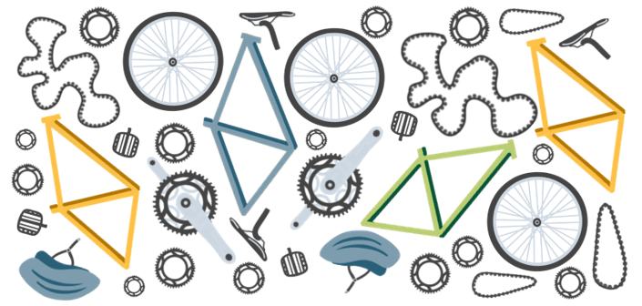

Radfahren - On the road auf zwei Rädern
Diese Themenseite befindet sich derzeit noch in Vorbereitung.
Mein besattelter Testpartner sammelt aktuell fleißig Kilometer, testet Touren und arbeitet an aussagekräftigen Streckenprofilen. Langfristig wird es hier außerdem Kauftipps geben - für alle, die den perfekten Kameraden auf zwei Rädern suchen.
